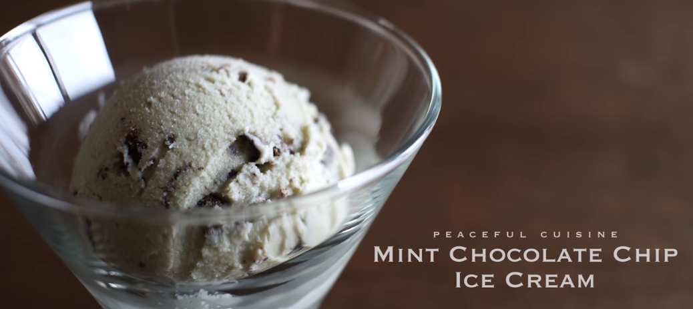

Peaceful Cuisine's Mint Chocolate Chip Ice Cream Recipe

Description
The recipe yields 1 tub of ice cream, it's perfect for a family or for yourself. The video contains very nice ASMR, it's very visually-appealing.
The recipe is very flexible, you can change or leave out certain ingredients as you like.
Ingredients
Mint Ice Cream
- 100g cashew nuts
- 20g coconut oil
- 80g vegetable oil (less flavored oil is recommended)
- 100g maple syrup
- 100g cane sugar
- 600g soy milk (substitute: your choice of milk)
- 15g mint leaves (washed)
- 1 tsp. vanilla extract
Chocolate Chips
- Optionally: Substitute the below instead with store-bought chocolate bars or vegan chocolate chips
- 30g cacao butter
- 30g cacao powder
- 15g maple syrup
Steps
- Add your cashew nuts, coconut oil, vegetable oil, cane sugar, maple syrup, milk, and mint leaves in the blender.
- Blend all your ingredients in the blender (your mixture should look frothy).
- Add your vanilla extract in the mixture.
- Get a pan and add your cacao butter, cacao powder, and maple syrup.
- Turn the heat on and melt and stir the melted chocolate together.
- Turn the ice cream machine on and pour the mixture into the ice cream machine.
- Let the machine run for 10 minutes or so until the mixture thickens.
- Pour in your melted chocolate gradually as the machine turns.
- Take out the ice cream mixture using a spatula and put it in a container.
- Put the ice cream in the freezer for about 6 hours.
- Serve the ice cream.
Back to Recipes Homepage
Back to Top